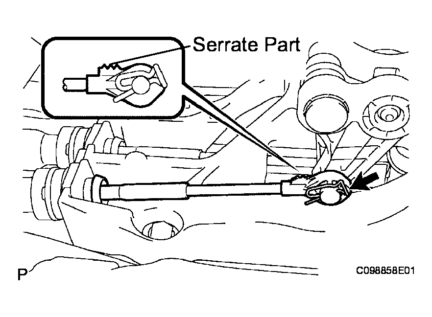

Floor Shift Lever Assembly: Installation
- INSTALL FLOOR SHIFT LEVER ASSEMBLY
- Connect the transmission control shift cable to the shift lever retainer with the clip.
- Connect the end of the transmission control shift cable to the floor shift lever.
- Connect the transmission control select cable to the shift lever retainer.
- Connect the end of the transmission control select cable to the floor shift lever with the clip.

Courtesy of © TOYOTA, LICENSE AGREEMENT TMS1002NOTE:- The serrated part of the select cable point should face upward when the select cable point is connected.
- The clip should be inserted in the direction shown in the illustration.
- Install the shift lever with the 4 bolts.
Torque: 12 N*m (120 kgf*cm, 9 ft.*lbf)
- Connect the wire harness.
- INSTALL REAR CONSOLE BOX ASSEMBLY
- Install the rear console box (See INSTALLATION ).
- INSTALL SHIFT LEVER KNOB SUB-ASSEMBLY
- Install the shift lever knob (see INSTALLATION ).